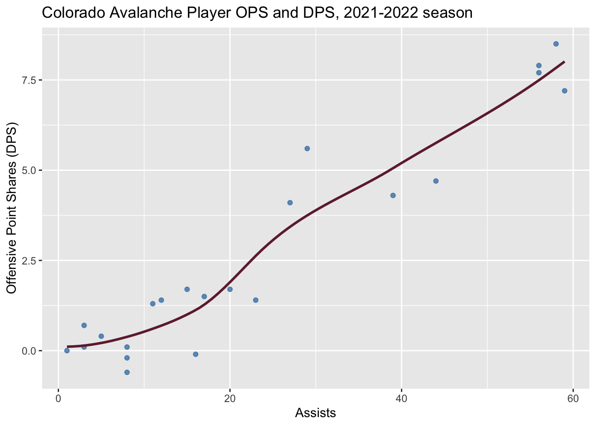
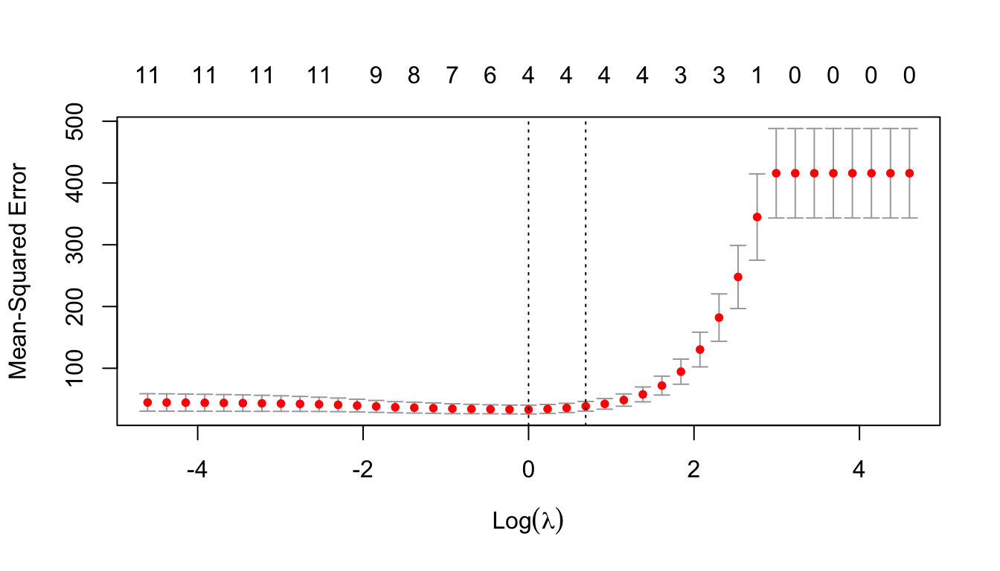
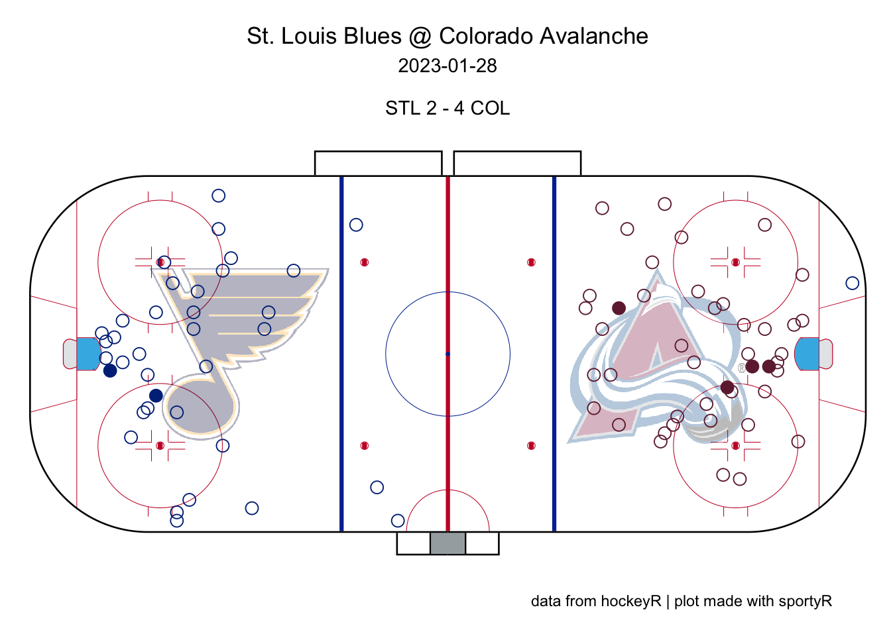

Chapter 8 Data Acquisition
There are many ways to acquire sports data to analyze in R. These include:
- Manually typing data into a spreadsheet
- Downloading pre-formatted tabular data from (https://www.sports-reference.com/)
- Downloading datasets from various internet sources
- Importing data using R libraries
- Scraping data from internet websites
This chapter will explore these various methods of acquiring data and will also review data visualization and summaries. We will typically use ggplot for visualization and kable for data tables. The R Graph Gallery (http://r-graph-gallery.com/) is a nice resource for visualizations using ggplot.
8.1 Tabular Data From Sports Reference
All tabular data on Sports Reference (https://www.sports-reference.com/) can be easily downloaded though a little bit of data wrangling and cleaning is required to prepare the data.
Once you have navigated to the page that you want to download data from, click Share & Export, and select Get table as CSV (for Excel). This will generate comma-separated data that you can copy and paste into your favorite text editor.
Get table in CSV format
Copy data and save as .csv
Example 8.1 Acquire the Scoring Regular Season dataset for the Colorado Avalanche 2021–2022 season.
This data is located on this webpage: https://www.hockey-reference.com/teams/COL/2022.html.
Once the data has been collected, using data wrangling and cleaning methods to transform the dataset into an easier to use format. Use this dataset to explore the relationship between goals, assists, OPS (offensive point shares), and DPS (defensive point shares).
# Load data after collection
avs21 <- read_csv("data/avs21.csv")
# Take a look at the first five rows and first five columns
avs21 %>% slice_head(n=5) %>% select(1:5) %>% kable(booktabs=T)| …1 | …2 | …3 | …4 | …5 |
|---|---|---|---|---|
| Rk | Player | Age | Pos | GP |
| 1 | Mikko Rantanen | 25 | RW | 75 |
| 2 | Nathan MacKinnon | 26 | C | 65 |
| 3 | Nazem Kadri | 31 | C | 71 |
| 4 | Cale Makar | 23 | D | 77 |
# Remove unnecessary first row during loading
avs21 <- read_csv("data/avs21.csv",skip = 1)
# Select columns of interest
avs21 <- avs21 %>% select(Player,G,A,OPS)
# Take a look at the first five rows
avs21 %>% slice_head(n=5) %>% kable(booktabs=T)| Player | G | A | OPS |
|---|---|---|---|
| Mikko Rantanen | 36 | 56 | 7.9 |
| Nathan MacKinnon | 32 | 56 | 7.7 |
| Nazem Kadri | 28 | 59 | 7.2 |
| Cale Makar | 28 | 58 | 8.5 |
| Andre Burakovsky | 22 | 39 | 4.3 |
# Make sure to eliminate any extra rows like "Team Totals"
avs21 <- avs21 %>% slice(1:n()-1)
# Let's also remove all players that did not have a goal and an assist
avs21 <- avs21 %>% filter(G>0 & A >0)Histogram
avs21 %>% ggplot(aes(x=G)) + geom_histogram(binwidth = 2,color="white",fill="steelblue") +
labs(x="Goals",y="Count",title="Colorado Avalanche Player Goal Counts, 2021-2022 season")
Density plot
avs21 %>% ggplot(aes(x=OPS)) + geom_density(fill="#6F263D") +
labs(x="Offensive Point Shares (OPS)",y="Density",title="Colorado Avalanche Player OPS Density, 2021-2022 season")
Scatterplot with Linear Fit
avs21 %>% ggplot(aes(x=G,y=OPS)) + geom_point() +
geom_smooth(method=lm , fill="steelblue", color="#6F263D", se=TRUE) +
labs(x="Goals",y="Offensive Point Shares (OPS)",title="Colorado Avalanche Player Goals and OPS, 2021-2022 season")Scatterplot with LOESS Smoother
avs21 %>% ggplot(aes(x=A,y=OPS)) + geom_point(alpha=0.8,color="steelblue") +
geom_smooth(method=loess, color="#6F263D", se=FALSE) +
labs(x="Assists",y="Offensive Point Shares (DPS)",title="Colorado Avalanche Player OPS and DPS, 2021-2022 season")
Correlation Matrix Plot
library(GGally)
avs21 %>% select(-Player) %>% ggpairs()
8.2 Downloading Datasets From Internet
We can directly download datasets from the internet if we have a valid url to the datset.
Example 8.2 Game-by-game data for the CSU volleyball team is available at: https://aaron-nielsen.github.io/csu_volleyball.csv
Download this data and create some visualizations.
# Load data from URL
url <- "https://aaron-nielsen.github.io/csu_volleyball.csv"
csu_vb = read_csv(url,show_col_types = F)
# Look at first ten rows and columns
csu_vb %>% select(1:10) %>% slice(1:10) %>% kable(booktabs=T)| Date | Opponent | W/L | SP | K | E | TA | PCT | AST | SA |
|---|---|---|---|---|---|---|---|---|---|
| 8/25/17 | Duke | L | 5 | 66 | 28 | 179 | 0.212 | 64 | 5 |
| 8/26/17 | Central Florida | W | 4 | 56 | 18 | 126 | 0.302 | 52 | 7 |
| 8/29/17 | Northern Colorado | W | 3 | 39 | 8 | 77 | 0.403 | 38 | 5 |
| 9/1/17 | vs TCU | W | 5 | 62 | 20 | 149 | 0.282 | 59 | 6 |
| 9/1/17 | vs UNC Asheville | W | 3 | 41 | 7 | 80 | 0.425 | 39 | 8 |
| 9/2/17 | at Florida State | W | 3 | 48 | 12 | 95 | 0.379 | 45 | 6 |
| 9/8/17 | Ball State | W | 4 | 59 | 24 | 145 | 0.241 | 56 | 6 |
| 9/8/17 | Michigan | W | 3 | 48 | 8 | 101 | 0.396 | 46 | 3 |
| 9/10/17 | Idaho State | W | 3 | 46 | 11 | 92 | 0.380 | 46 | 4 |
| 9/15/17 | UAlbany | W | 3 | 41 | 7 | 73 | 0.466 | 36 | 5 |
Correlogram
# Example adapted from: http://r-graph-gallery.com/97-correlation-ellipses.html
# Libraries
library(ellipse)
library(RColorBrewer)
# Use of the mtcars data proposed by R
data <- csu_vb %>% select(-(1:3)) %>% cor()
# Build a Pannel of 100 colors with Rcolor Brewer
my_colors <- brewer.pal(5, "Spectral")
my_colors <- colorRampPalette(my_colors)(100)
# Order the correlation matrix
ord <- order(data[1, ])
data_ord <- data[ord, ord]
plotcorr(data_ord, col=my_colors[data_ord*50+50], mar=c(1,1,1,1))
Correlation Matrix Plot
csu_vb %>% select(-(1:3)) %>%
ggcorr(method = c("everything", "pearson"))
Boxplot
csu_vb %>%
ggplot(aes(x=`W/L`, y=PCT, fill=`W/L`)) +
geom_boxplot(alpha=0.3) +
theme(legend.position="none") +
labs(x="Match Result",y="Hitting Percentage") +
scale_x_discrete(limits = c("W", "L"),labels=c("Wins","Losses"))
Violin Plot
csu_vb %>% ggplot(aes(x=`W/L`, y=PCT, fill=`W/L`)) +
geom_violin() +
labs(x="Match Result",y="Hitting Percentage") +
scale_x_discrete(limits = c("W", "L"),labels=c("Wins","Losses")) +
theme(legend.position="none")
8.3 Importing Data Using R Libraries
8.3.1 BaseballR package
The baseballr package allows for scraping data from Baseball Reference, Fangraphs, and Baseball Savant.
For more information, visit: https://billpetti.github.io/baseballr/
Example 8.3 Use the baseballr package to obtain game results for the Colorado Rockies in 2022. Create a Kable Table of the first 20 games.
library(baseballr)
# Scrape data from Baseball Reference
rox22 <- bref_team_results("COL", 2022)
# Select relevant columns and display first 20 games
rox22 %>%
select(Date,H_A,Opp,Result,R,RA,Time,Attendance) %>%
slice(1:20) %>% kable(booktabs=T)| Date | H_A | Opp | Result | R | RA | Time | Attendance |
|---|---|---|---|---|---|---|---|
| Friday, Apr 8 | H | LAD | L | 3 | 5 | 3:09 | 48627 |
| Saturday, Apr 9 | H | LAD | W | 3 | 2 | 2:48 | 48087 |
| Sunday, Apr 10 | H | LAD | W | 9 | 4 | 3:13 | 40825 |
| Monday, Apr 11 | A | TEX | W | 6 | 4 | 4:01 | 35052 |
| Tuesday, Apr 12 | A | TEX | W | 4 | 1 | 3:09 | 15862 |
| Thursday, Apr 14 | H | CHC | L | 2 | 5 | 3:02 | 24444 |
| Friday, Apr 15 | H | CHC | W | 6 | 5 | 3:26 | 35450 |
| Saturday, Apr 16 | H | CHC | W | 9 | 6 | 2:58 | 37476 |
| Sunday, Apr 17 | H | CHC | L | 4 | 6 | 3:19 | 36391 |
| Monday, Apr 18 | H | PHI | W | 4 | 1 | 2:53 | 20403 |
| Tuesday, Apr 19 | H | PHI | W | 6 | 5 | 3:02 | 23800 |
| Wednesday, Apr 20 | H | PHI | L | 6 | 9 | 3:09 | 21490 |
| Saturday, Apr 23 (1) | A | DET | L | 0 | 13 | 3:02 | 37566 |
| Saturday, Apr 23 (2) | A | DET | W | 3 | 2 | 2:47 | 28635 |
| Sunday, Apr 24 | A | DET | W | 6 | 2 | 2:55 | 20088 |
| Monday, Apr 25 | A | PHI | L | 2 | 8 | 3:09 | 20130 |
| Tuesday, Apr 26 | A | PHI | L | 3 | 10 | 3:19 | 22300 |
| Wednesday, Apr 27 | A | PHI | L | 3 | 7 | 3:20 | 20127 |
| Thursday, Apr 28 | A | PHI | L | 1 | 7 | 3:08 | 20098 |
| Friday, Apr 29 | H | CIN | W | 10 | 4 | 3:25 | 30206 |
Example 8.4 Use the baseballr packges to obtain the batting leaderboards for MLB in 2022. Create a table with the top ten players in terms of WAR.
# Scrape data from Fangraphs
# bat22 <- fg_batter_leaders(x = 2022, y = 2022)
#
# # Select relevant columns
# bat22 = bat22 %>%
# select(Name,Team,OPS,WPA,wRC,WAR)
#
# # Arrange by leaders in WAR and print to a Kable table
# bat22 %>%
# arrange(desc(WAR)) %>%
# slice(1:10) %>%
# kable(booktabs=T)Example 8.5 Using the baseballr package, obtain the top ten leaders for max hit speed along with these players average hit speed, number of barrels, and barrel percent. Present this information in a Kable table.
# Scrape Statcast data from Baseball Savant
sc_leader <- statcast_leaderboards(leaderboard = "exit_velocity_barrels",year = 2022)
# Select relevant columns
sc_leader %>%
mutate(Name = paste(first_name, last_name),
`Max Hit Speed` = max_hit_speed,
`Avg Hit Speed` = avg_hit_speed,
`Barrels` = barrels,
`Barrel Percent` = brl_percent) %>%
select(Name,`Max Hit Speed`,`Avg Hit Speed`,`Barrels`,`Barrel Percent`) %>%
arrange(desc(`Max Hit Speed`)) %>% slice(1:10) %>% kable(booktabs=T)| Name | Max Hit Speed | Avg Hit Speed | Barrels | Barrel Percent |
|---|---|---|---|---|
| Oneil Cruz | 122.4 | 91.9 | 32 | 15.5 |
| Giancarlo Stanton | 119.8 | 95.0 | 51 | 19.3 |
| Shohei Ohtani | 119.1 | 92.9 | 72 | 16.8 |
| Vladimir Guerrero Jr. | 118.4 | 92.8 | 59 | 11.2 |
| Aaron Judge | 118.4 | 95.9 | 106 | 26.5 |
| Luis Robert Jr. | 117.8 | 89.3 | 27 | 8.9 |
| Yordan Alvarez | 117.4 | 95.2 | 78 | 21.0 |
| Christian Yelich | 117.2 | 91.5 | 34 | 8.2 |
| Julio Rodríguez | 117.2 | 92.0 | 48 | 13.1 |
| Rowdy Tellez | 116.9 | 91.1 | 53 | 12.9 |
This is a useful website for obtaining and visualizing StatCast pitch data:
https://billpetti.github.io/baseballr/articles/using_statcast_pitch_data.html
Example 8.6 Obtain Shohei Ohtani’s pitch data for the 2022 season. Plot the horizontal and vertical break of the pitches. Also, investigate his fastball velocity by inning.
More about Ohtani’s pitching repertoire: https://youtu.be/7nZBlYIqEww
More about types of pitches: https://youtu.be/1FTFWzcgjHE
library(RColorBrewer)
# This follows the example at:
# https://billpetti.github.io/baseballr/articles/using_statcast_pitch_data.html
# ohtani_id <- baseballr::playerid_lookup(last_name = "Ohtani", first_name = "Shohei") %>%
# pull(mlbam_id)
# can get player id for mlbam at: https://razzball.com/mlbamids/
ohtani_id <- "660271"
ohtani_data <- baseballr::statcast_search_pitchers(start_date = "2022-03-01",
end_date = "2022-12-01",
pitcherid = "660271")
ohtani_cleaned_data <- ohtani_data %>%
# Only keep rows with pitch movement readings
# and during the regular season
filter(!is.na(pfx_x), !is.na(pfx_z),
game_type == "R") %>%
mutate(pfx_x_in_pv = -12*pfx_x,
pfx_z_in = 12*pfx_z)
colors <- brewer.pal(n = 6, name = "Dark2")
pitch_colors <- c("4-Seam Fastball" = colors[1],
"Sinker" = colors[2],
"Curveball" = colors[3],
"Slow Curve" = colors[4],
"Cutter" = colors[5],
"Slider" = colors[6],
"Sweeper" = colors[7],
"Split-Finger" = colors[8])
( ohtani_pitch_types <- unique(ohtani_cleaned_data$pitch_name) )## [1] "Sweeper" "Curveball" "Sinker" "Cutter"
## [5] "Slider" "4-Seam Fastball" "Split-Finger" "Slow Curve"ohtani_cleaned_data %>%
ggplot(aes(x = pfx_x_in_pv, y = pfx_z_in, color = pitch_name)) +
geom_vline(xintercept = 0) +
geom_hline(yintercept = 0) +
geom_point(size = 1.5, alpha = 0.5) +
scale_color_manual(values = pitch_colors,
limits = ohtani_pitch_types) +
scale_x_continuous(limits = c(-25,25),
breaks = seq(-20,20, 5),
labels = scales::number_format(suffix = "\"")) +
scale_y_continuous(limits = c(-25,25),
breaks = seq(-20,20, 5),
labels = scales::number_format(suffix = "\"")) +
coord_equal() +
labs(title = "Shohei Ohtani Pitch Movement",
subtitle = "2022 MLB Season | Pitcher's POV",
caption = "Data: Baseball Savant via baseballr",
x = "Horizontal Break",
y = "Induced Vertical Break",
color = "Pitch Name")
# Group pitches by inning
ohtani_velo_by_inning <- ohtani_cleaned_data %>%
filter(pitch_name == "4-Seam Fastball") %>%
group_by(inning, pitch_name) %>%
summarize(average_velo = mean(release_speed, na.rm = TRUE))
# Plot average fastball speed by inning
ohtani_velo_by_inning %>%
ggplot(aes(x = inning, y = average_velo, color = pitch_name)) +
geom_line(linewidth = 1.5, alpha = 0.5, show.legend = FALSE) +
geom_point(size = 3, show.legend = FALSE) +
scale_color_manual(values = pitch_colors) +
scale_x_continuous(breaks = 1:9) +
scale_y_continuous(limits = c(90, 100)) +
labs(title = "Shohei Ohtani 4-Seam Fastball Velo By Inning",
subtitle = "2022 MLB Season",
caption = "Data: Baseball Savant via baseballr",
x = "Inning",
y = "Average Velo")
8.3.2 nflfastR package
The nflfastR package is a helpful package for obtaining play-by-play and roster data for NFL games.
For more details, see: https://www.nflfastr.com/articles/nflfastR.html
For a quick explanation of expected points added, see: https://youtu.be/qo7-zeJEVzs
Example 8.7 Use the nflfastR package to obtain the play-by-play data for the Denver Broncos home game against the San Francisco 49ers during the 2022 season.
library(nflfastR)
library(gsisdecoder)
# First find the game ID by searching Broncos home games in 2022
fast_scraper_schedules(2022) %>%
filter(home_team=="DEN") %>%
select(game_id,gameday,away_team,home_team) %>%
kable(booktabs=T)| game_id | gameday | away_team | home_team |
|---|---|---|---|
| 2022_02_HOU_DEN | 2022-09-18 | HOU | DEN |
| 2022_03_SF_DEN | 2022-09-25 | SF | DEN |
| 2022_05_IND_DEN | 2022-10-06 | IND | DEN |
| 2022_07_NYJ_DEN | 2022-10-23 | NYJ | DEN |
| 2022_11_LV_DEN | 2022-11-20 | LV | DEN |
| 2022_14_KC_DEN | 2022-12-11 | KC | DEN |
| 2022_15_ARI_DEN | 2022-12-18 | ARI | DEN |
| 2022_18_LAC_DEN | 2023-01-08 | LAC | DEN |
# Scrape data for the specific game and display play-by-play data
# fast_scraper("2022_03_SF_DEN") %>%
# clean_pbp() %>%
# select(desc, play_type, ep, epa, home_wp) %>%
# head(10) %>%
# kable(booktabs=T,digits = 3) %>%
# column_spec(1, width = "3.5in")library(nflplotR)
# Example from: https://www.nflfastr.com/articles/nflfastR.html
pbp <- nflfastR::load_pbp(2022) %>%
filter(season_type == "REG") %>%
filter(!is.na(posteam) & (rush == 1 | pass == 1))
offense <- pbp %>% group_by(team = posteam) %>%
summarise(off_epa = mean(epa, na.rm = TRUE))
defense <- pbp %>% group_by(team = defteam) %>%
summarise(def_epa = mean(epa, na.rm = TRUE))
offense %>%
inner_join(defense, by = "team") %>%
ggplot(aes(x = off_epa, y = def_epa)) +
geom_abline(slope = -1.5, intercept = c(.4, .3, .2, .1, 0, -.1, -.2, -.3), alpha = .2) +
geom_mean_lines(aes(h_var = off_epa, v_var = def_epa)) +
geom_nfl_logos(aes(team_abbr = team), width = 0.07, alpha = 0.7) +
labs(x = "Offense EPA/play", y = "Defense EPA/play", caption = "Data: @nflfastR",
title = "2022 NFL Offensive and Defensive EPA per Play") +
theme_bw() +
theme( plot.title = element_text(size = 12, hjust = 0.5, face = "bold") ) +
scale_y_reverse()
8.3.3 hoopR package
The hoopR allows for one to access data related to professional and college basketball.
Example 8.8 Using the hoopR package, obtain the play-by-play data for the Denver Nuggets vs. Philadelphia 76ers game on January 28, 2023.
library(hoopR)
# https://www.espn.com/nba/game/_/gameId/401468896
hoopR::espn_nba_pbp(game_id = 401468896) %>%
select(`Description`=text,`Play Type`=type_text,
Quarter=period_display_value,Points=score_value,Clock=clock_display_value) %>%
slice(1:15) %>%
kable(booktabs=T) %>%
column_spec(1, width = "3in") %>%
column_spec(2, width = "1in")| Description | Play Type | Quarter | Points | Clock |
|---|---|---|---|---|
| Nikola Jokic vs. Joel Embiid (Jamal Murray gains possession) | Jumpball | 1st Quarter | 0 | 12:00 |
| Nikola Jokic misses 11-foot jumper | Jump Shot | 1st Quarter | 0 | 11:45 |
| James Harden defensive rebound | Defensive Rebound | 1st Quarter | 0 | 11:41 |
| Joel Embiid makes 6-foot two point shot (James Harden assists) | Driving Floating Bank Jump Shot | 1st Quarter | 2 | 11:35 |
| Nikola Jokic shooting foul | Shooting Foul | 1st Quarter | 0 | 11:35 |
| Joel Embiid misses free throw 1 of 1 | Free Throw - 1 of 1 | 1st Quarter | 0 | 11:35 |
| Michael Porter Jr. defensive rebound | Defensive Rebound | 1st Quarter | 0 | 11:32 |
| Michael Porter Jr. makes 27-foot three point jumper (Kentavious Caldwell-Pope assists) | Jump Shot | 1st Quarter | 3 | 11:20 |
| Tobias Harris misses 26-foot three point jumper | Jump Shot | 1st Quarter | 0 | 10:58 |
| Kentavious Caldwell-Pope defensive rebound | Defensive Rebound | 1st Quarter | 0 | 10:55 |
| Nikola Jokic makes finger roll layup (Jamal Murray assists) | Finger Roll Layup | 1st Quarter | 2 | 10:48 |
| Joel Embiid makes driving layup (James Harden assists) | Driving Layup Shot | 1st Quarter | 2 | 10:37 |
| Aaron Gordon makes 16-foot pullup jump shot | Pullup Jump Shot | 1st Quarter | 2 | 10:25 |
| Joel Embiid makes 14-foot pullup jump shot | Pullup Jump Shot | 1st Quarter | 2 | 10:12 |
| Joel Embiid shooting foul | Shooting Foul | 1st Quarter | 0 | 9:59 |
Example 8.9 Obtain win probability as a function of game time for Colorado State vs. Boise State men’s basketball on January 28, 2023.
# Get ID from ESPN game URL: https://www.espn.com/mens-college-basketball/game/_/gameId/401482835
library(hoopR)
hoopR::espn_mbb_wp(game_id = 401482835) %>%
select(Period=period,`Seconds Remaining`=game_seconds_left,`Home Win Pct`=home_win_percentage,`Play ID`=play_id) %>%
slice(1:10) %>%
kable(booktabs=T)| Period | Seconds Remaining | Home Win Pct | Play ID |
|---|---|---|---|
| 1 | 2375 | 0.891 | 401482835101806401 |
| 1 | 2372 | 0.893 | 401482835101806701 |
| 1 | 2349 | 0.913 | 401482835101809001 |
| 1 | 2322 | 0.916 | 401482835101815701 |
| 1 | 2319 | 0.918 | 401482835101816001 |
| 1 | 2297 | 0.934 | 401482835101818201 |
| 1 | 2273 | 0.939 | 401482835101824601 |
| 1 | 2269 | 0.933 | 401482835101825001 |
| 1 | 2269 | 0.924 | 401482835101825002 |
| 1 | 2238 | 0.939 | 401482835101828101 |
library(ncaahoopR)
wp_chart_new(401482835,show_labels = F)## Scraping Data for Game: 1 of 1
game_flow(game_id = 401482835, home_col = "blue", away_col = "forestgreen")## Scraping Data for Game: 1 of 1
8.3.4 hockeyR package
The hockeyR packages allows you to obtain data from NHL.com and Hockey Reference. The sportyR package is useful for plotting spatial data on various playing fields/courts.
Example 8.10 Create a shot plot for the Colorado Avalanche vs. St. Louis Blues on January 28, 2023.
# Example adapted from: https://hockeyr.netlify.app/
# devtools::install_github("danmorse314/hockeyR")
library(hockeyR)
library(sportyR)
pbp <- hockeyR::load_pbp('2022-2023')# get single game
game <- pbp %>%
filter(game_date == "2023-01-28" & home_abbreviation == "COL")
game %>%
select(Date=game_date,Period=period,Time=period_time_remaining,Event=event,
Description=description) %>%
slice(1:15) %>%
kable(booktabs=T)| Date | Period | Time | Event | Description |
|---|---|---|---|---|
| 2023-01-28 | 1 | 20:00 | Game Scheduled | Game Scheduled |
| 2023-01-28 | 1 | 20:00 | Faceoff | J.T. Compher faceoff won against Noel Acciari |
| 2023-01-28 | 1 | 19:47 | Stoppage | Icing |
| 2023-01-28 | 1 | 19:47 | Faceoff | J.T. Compher faceoff won against Noel Acciari |
| 2023-01-28 | 1 | 19:35 | Takeaway | Takeaway by Matt Nieto |
| 2023-01-28 | 1 | 19:09 | Shot | Torey Krug Wrist Shot saved by Alexandar Georgiev |
| 2023-01-28 | 1 | 19:09 | Stoppage | Goalie Stopped |
| 2023-01-28 | 1 | 19:09 | Faceoff | Nathan MacKinnon faceoff won against Brayden Schenn |
| 2023-01-28 | 1 | 18:39 | Shot | Evan Rodrigues Wrist Shot saved by Jordan Binnington |
| 2023-01-28 | 1 | 18:07 | Hit | Andreas Englund hit Logan Brown |
| 2023-01-28 | 1 | 17:30 | Shot | Denis Malgin Wrist Shot saved by Jordan Binnington |
| 2023-01-28 | 1 | 17:21 | Blocked Shot | Samuel Girard shot blocked shot by Niko Mikkola |
| 2023-01-28 | 1 | 16:46 | Hit | Noel Acciari hit Erik Johnson |
| 2023-01-28 | 1 | 16:35 | Missed Shot | Noel Acciari Wide of Net Alexandar Georgiev |
| 2023-01-28 | 1 | 16:25 | Shot | Matt Nieto Wrist Shot saved by Jordan Binnington |
# grab team logos & colors
team_logos <- hockeyR::team_logos_colors %>%
filter(team_abbr == unique(game$home_abbreviation) | team_abbr == unique(game$away_abbreviation)) %>%
# add in dummy variables to put logos on the ice
mutate(x = ifelse(full_team_name == unique(game$home_name), 50, -50),
y = 0)
# add transparency to logo
transparent <- function(img) {
magick::image_fx(img, expression = "0.3*a", channel = "alpha")
}
# get only shot events
fenwick_events <- c("MISSED_SHOT","SHOT","GOAL")
shots <- game %>% filter(event_type %in% fenwick_events) %>%
# adding team colors
left_join(team_logos, by = c("event_team_abbr" = "team_abbr"))
# create shot plot
geom_hockey("nhl") +
ggimage::geom_image(
data = team_logos,
aes(x = x, y = y, image = team_logo_espn),
image_fun = transparent, size = 0.22, asp = 2.35
) +
geom_point(
data = shots,
aes(x_fixed, y_fixed),
size = 3,
color = shots$team_color1,
shape = ifelse(shots$event_type == "GOAL", 19, 1)
) +
labs(
title = glue::glue("{unique(game$away_name)} @ {unique(game$home_name)}"),
subtitle = glue::glue(
"{unique(game$game_date)}\n
{unique(shots$away_abbreviation)} {unique(shots$away_final)} - {unique(shots$home_final)} {unique(shots$home_abbreviation)}"
),
caption = "data from hockeyR | plot made with sportyR"
) +
theme(
plot.title = element_text(hjust = 0.5),
plot.subtitle = element_text(hjust = 0.5),
plot.caption = element_text(hjust = .9))
8.3.5 worldfootballR
The worldfootballR package allows one to access data from FBRef, Understat, and other soccer websites.
Example 8.11 Download the match summaries for all US Women’s National Team (USWNT) in the 2019 World Cup. Display this information in a kable table.
For more on xG, see: https://youtu.be/zSaeaFcm1SY
library(worldfootballR)
# USWNT 2019 World Cup results
url <- "https://fbref.com/en/squads/1c912aa0/2019/United-States-Women-Stats"
uswnt19 <- get_team_match_results(url)
uswnt19 %>% filter(Comp == "World Cup") %>%
select(-Day,-Time,-Comp,-Team_Url,-Captain,-Formation,
-Referee,-Notes,-Attendance,-Venue,-Team) %>%
kable(booktabs=T)| Date | Round | Result | GF | GA | Opponent | xG | xGA | Poss |
|---|---|---|---|---|---|---|---|---|
| 2019-06-11 | Group stage | W | 13 | 0 | Thailand | 7.1 | 0.1 | 72 |
| 2019-06-16 | Group stage | W | 3 | 0 | Chile | 3.7 | 0.0 | 71 |
| 2019-06-20 | Group stage | W | 2 | 0 | Sweden | 2.1 | 0.4 | 61 |
| 2019-06-24 | Round of 16 | W | 2 | 1 | Spain | 2.4 | 0.2 | 55 |
| 2019-06-28 | Quarter-finals | W | 2 | 1 | France | 1.1 | 1.6 | 40 |
| 2019-07-02 | Semi-finals | W | 2 | 1 | England | 0.9 | 1.7 | 43 |
| 2019-07-07 | Final | W | 2 | 0 | Netherlands | 3.0 | 0.2 | 53 |
8.4 Data Scraping
Acquiring data from internet websites can be completed by using data scraping methods. In essence, this allows your computer to extract data from websites. There are a handful of techniques that we will use to accomplish some basic scraping tasks.
8.4.1 General Tips
Brainstorm: Ask yourself what data you need and were to find it. If you pull from different sources, do you have a unique identifier between the sources?
Start small: View your scraping project as a war, winning it with small battles. If you want to scrape sports statistics for the NFL, consider how to scrape these statistics for one team.
Hyperlinks are your friend: Lead to websites with more detailed information and/or serve as the unique identifier between different data sources?
Data is everywhere: Text color, font, or highlighting may serve as valuable data that you need. If these features exist on the webpage, then they exist within the HTML code which generated the document.
Ready your search engine: When you are undoubtably stuck and have a question, it’s likely the answer is already on StackOverflow (https://stackoverflow.com/)
Careful how quickly you scrape from a website: If you attempt to scrape from a website too frequently, you may get a temporary (or even permanent) IP ban. You can view a website’s rules for scraping by looking at the
robots.txtfile on the website of interest. For example, see: https://www.basketball-reference.com/robots.txt
8.4.2 Introduction to HTML
All contents that are displayed on a web page are structured through HTML with the help of HTML elements. HTML elements consist of a tag and contents. The tag defines how the web browser should format and display the content.
Aptly, the content is what should be displayed.
Attributes are optional parameters which provide additional information about the element in which the attribute is included. The type of attribute is the attribute name , whereas the quantity assigned to the attribute is the attribute value.
HTML element structure
8.4.3 rvest Package
The rvest (pronounced “harvest”) package in R is one of the best options for scraping data directly into R.
This is part of the tidyverse ecosystem in R. Allows users to scrape (or harvest) data from webpages.
Common use functions from the package include:
- read_html(): read HTML from a webpage
- html_elements(): returns a subset of elements with specified characteristics
- html_text(): returns the content of all elements
- html_attr(): returns attribute values for all elements with specified attribute
- html_table(): returns a list of all HTML tables
A working knowledge of css and/or xpath is helpful.
8.4.4 CSS Gadget Selector
All web pages are composed of HTML elements, but some elements are incredibly complex. They often are nested inside of other elements or rely on other elements from another document.
A selector gadget allows you to determine what css selector you need to extract the information you desire. These JavaScript bookmark lets determine where the information you desire belongs in the HTML code.
You can download the most popular selector gadget here which also has a Google Chrome extension available (shorturl.at/nrFJP).
Probably more than half the time, these gadgets prove less than helpful which is why I suggest perusing the HTML file on your own with the Inspect feature in Google Chrome.
8.4.5 Scraping Examples
Many R packages exist to scrape data from the Sports Reference websites, however, we can also scrape the data ourselves without too much trouble.
Example 8.12 Scrape A’ja Wilson’s per game statistics on Basketball Reference and output the data into a kable table. Use the selector gadget to find the correct
Link: https://www.basketball-reference.com/wnba/players/w/wilsoa01w.html
We want to get this data into R:
HTML element structure
We can use the Selector Gadget to identify the html tag for this table.
Using the selector gadget
library(rvest)
library(kableExtra)
url <- "https://www.basketball-reference.com/wnba/players/w/wilsoa01w.html"
# Be careful to not run this function too quickly or you may be IP banned
wilson <- read_html(url)# Grab the node of interest and format the output as a html_table().
# This is now a list
wilson %>%
html_elements("#per_game0") %>%
html_table()## [[1]]
## # A tibble: 6 × 28
## Year Tm Age G GS MP FG FGA `FG%` `3P` `3PA` `3P%` `2P`
## <chr> <chr> <int> <int> <int> <dbl> <dbl> <dbl> <dbl> <dbl> <dbl> <dbl> <dbl>
## 1 2018 "LVA" 21 33 33 30.6 7.4 16.1 0.462 0 0 NA 7.4
## 2 2019 "LVA" 22 26 25 28.5 6.1 12.7 0.479 0 0 0 6.1
## 3 2020 "LVA" 23 22 22 31.7 7.5 15.7 0.48 0 0 NA 7.5
## 4 2021 "LVA" 24 32 32 31.9 6.5 14.6 0.444 0 0 1 6.4
## 5 2022 "LVA" 25 36 36 30 7.2 14.4 0.501 0.9 2.3 0.373 6.4
## 6 Care… "" NA 149 148 30.5 7 14.7 0.473 0.2 0.6 0.376 6.7
## # … with 15 more variables: `2PA` <dbl>, `2P%` <dbl>, `eFG%` <dbl>, FT <dbl>,
## # FTA <dbl>, `FT%` <dbl>, ORB <dbl>, DRB <dbl>, TRB <dbl>, AST <dbl>,
## # STL <dbl>, BLK <dbl>, TOV <dbl>, PF <dbl>, PTS <dbl># We can convert the list to a data frame to allow us to use dplyr functions
# like select
# Output the first ten columns
wilson <- read_html(url)
wilson %>%
html_elements("#per_game0") %>%
html_table() %>%
data.frame() %>%
select(1:10) %>%
kable(booktabs=T)| Year | Tm | Age | G | GS | MP | FG | FGA | FG. | X3P |
|---|---|---|---|---|---|---|---|---|---|
| 2018 | LVA | 21 | 33 | 33 | 30.6 | 7.4 | 16.1 | 0.462 | 0.0 |
| 2019 | LVA | 22 | 26 | 25 | 28.5 | 6.1 | 12.7 | 0.479 | 0.0 |
| 2020 | LVA | 23 | 22 | 22 | 31.7 | 7.5 | 15.7 | 0.480 | 0.0 |
| 2021 | LVA | 24 | 32 | 32 | 31.9 | 6.5 | 14.6 | 0.444 | 0.0 |
| 2022 | LVA | 25 | 36 | 36 | 30.0 | 7.2 | 14.4 | 0.501 | 0.9 |
| Career | NA | 149 | 148 | 30.5 | 7.0 | 14.7 | 0.473 | 0.2 |
Example 8.13 Player efficiency rating (PER) is an advanced basketball statistic that attempts to quantify a player’s overall contribution.
Scrape the data from the following site and build a kable table with the top 20 players in terms of PER.
url <- "http://www.espn.com/nba/hollinger/statistics"
hollinger <- read_html(url)
holl_df <- hollinger %>% html_elements("div.mod-content") %>% .[2] %>%
html_table() %>% data.frame()
colnames(holl_df) = holl_df[2,]
holl_df %>% slice(-1,-2,-13,-24,-35,-46) %>% slice(1:20) %>% select(RK,PLAYER,PER) %>% kable(booktabs=T) | RK | PLAYER | PER |
|---|---|---|
| 1 | Nikola Jokic, DEN | 32.01 |
| 2 | Joel Embiid, PHI | 31.74 |
| 3 | Luka Doncic, DAL | 29.40 |
| 4 | Giannis Antetokounmpo, MIL | 28.89 |
| 5 | Anthony Davis, LAL | 27.56 |
| 6 | Jimmy Butler, MIA | 27.54 |
| 7 | Shai Gilgeous-Alexander, OKC | 27.49 |
| 8 | Damian Lillard, POR | 27.01 |
| 9 | Kevin Durant, BKN/PHX | 26.62 |
| 10 | Zion Williamson, NO | 25.43 |
| 11 | Stephen Curry, GS | 24.47 |
| 12 | Ja Morant, MEM | 24.21 |
| 13 | Kawhi Leonard, LAC | 24.17 |
| 14 | LeBron James, LAL | 24.16 |
| 15 | Tyrese Haliburton, IND | 23.76 |
| 16 | Jayson Tatum, BOS | 23.54 |
| 17 | Kristaps Porzingis, WSH | 23.43 |
| 18 | Domantas Sabonis, SAC | 23.40 |
| 19 | Donovan Mitchell, CLE | 22.81 |
| 20 | Clint Capela, ATL | 22.59 |
Example 8.14 Obtain the top ten leaders for goals on the US Women’s National Team and output as a kable table.
url <- "https://www.ussoccer.com/uswnt-stats/2022"
uswnt <- read_html(url)
uswnt_df <- uswnt %>%
html_elements("#some_table_id") %>% .[1] %>%
html_table() %>%
data.frame()
colnames(uswnt_df) = uswnt_df[1,]
uswnt_df$Goals <- as.integer(uswnt_df$Goals)## Warning: NAs introduced by coercionuswnt_df %>%
slice(-1,-n(),-(n()-1)) %>%
arrange(desc(Goals)) %>%
slice(1:10) %>%
kable(booktabs=T)| Name | Pos. | GP | GS | Min | G | A | Y | R | Career Caps | Goals |
|---|---|---|---|---|---|---|---|---|---|---|
| Morgan, Alex | F | 10 | 9 | 783 | 4 | 1 | 0 | 200 | 119 | |
| Rapinoe, Megan | F | 10 | 3 | 364 | 1 | 2 | 2 | 197 | 63 | |
| Horan, Lindsey | M | 14 | 14 | 979 | 1 | 0 | 1 | 122 | 26 | |
| Pugh, Mallory | F | 15 | 13 | 1030 | 7 | 7 | 0 | 82 | 25 | |
| Dunn, Crystal | D | 3 | 0 | 85 | 0 | 0 | 0 | 126 | 24 | |
| Lavelle, Rose | M | 16 | 15 | 1107 | 4 | 6 | 2 | 84 | 22 | |
| Williams, Lynn | F | 2 | 0 | 56 | 0 | 0 | 0 | 47 | 14 | |
| Smith, Sophia | F | 17 | 17 | 1192 | 11 | 1 | 0 | 27 | 12 | |
| Gautrat, Morgan | M | 1 | 1 | 45 | 0 | 0 | 0 | 88 | 8 | |
| Macario, Catarina | M | 5 | 5 | 342 | 5 | 1 | 1 | 17 | 8 |